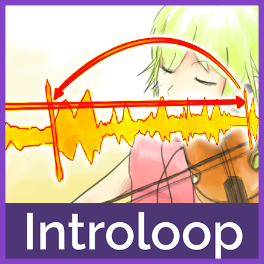

Introloop
Get that charm of a polished game. Adds huge value to music. Directs player's feel with an intro. Gives every song a memorable and immersive feeling which can't be put in an OST.
What could Introloop do?
In Unity if you select "Loop" in AudioSource, the song will loop to the beginning when it reaches the end of file.
But with Introloop, you can specify 2 time point "Intro Boundary" and "Looping Boundary" in your audio. Playing your audio with this plugin will loop back to Intro Boundary when it reaches Looping Boundary, effectively make the section before Intro Boundary an intro section that plays only once and the rest will be looping.

Those two points are stored in a separated asset file called IntroloopAudio file, think of it as an instruction
accompanying your original audio which you will then use the singleton class to play it - as simple as IntroloopPlayer.Instance.Play(myIntroloopAudio).
No need to place any special GameObject manually on your first/any scene, so you can start the play
mode from any scene like usual.

Your original audio file will remains intact, no need to cut it up to 2 files like some other solutions. Updating songs from
your composer is as easy as overwriting the audio file. As long as the song structure doesn't change, your IntroloopAudio will still works.
It is a common practice used in many commercial games. Intro adds huge value to music, turning into a powerful tool for directing player's feel and blends more into gameplay. Maybe if you haven't noticed, in the next section I will show various examples from games I liked.
Why is this necessary?
Let's recall memorable moment from favorite games you have played. A destined fight with arch rival? Roaming over world map for the first time? An opening stage that really hooks you that you can't put down the joystick?
Wondered why they stuck so well in your memory?
Many commercial game music has certain charm when you are listening to it in the game because they have been programmed to have a nice intro that sets the mood of that particular scene before transitioning seamlessly to a music loop, never having to play the intro again. This is the source of immersive feeling you never get when you listen to the song again in an OST or YouTube. You must experience it in the actual game.
Maybe it is easier to explain with examples!
Final Fantasy
RPG gamers knows the "random encounter". In theory it should get really boring after a while, but it works so well and always so exciting partly because of music's intro that really tell you "let's fight!" but at the same time never loop to that intro again, keeping the intro powerful. Intro also make the music more memorable, as the player heard the intro he/she will be subconsciously already preparing to hum to the verse.
Pokemon
Probably some of you have played Pokemon. When you run into some wild pokemon or even trainers the "Wadadadwadada...!" intro followed by some sick bassline will play. This part is never repeated again in a fight. It is one of the iconic thing in Pokemon. Without it Pokemon would not feel the same.
Ideal for lengthy fight
In situation like a fight in tactical turn-based RPG game or final boss fight, perhaps the music will loop multiple times. Why not begin with something a bit different? Music in this example is quite long, nevertheless when it reaches loop point you will see that if you have to begin the song at that point it would not be as effective.
Add shines to any track even with shortest of intro
You don't have to think of "Intro" as a long musical passage. Merely single-melody synth stab or one bar of attention-grabbing rhythm at the song's start can dramatically add memorable cue and makes player come back for more. This technique also can be used in scene that will be visited often like character select screen in fighting game.
Transition of mood
How about a menacing tone at the start and then picking up the tension later? In normal looping your composer would have to find a way to reduce the tension again in order to seamlessly loop the music. With Introloop you can give your composer a lot more creativity freedom. Even tempo difference is possible - slower BPM only at start, increase speed later and never loop back to that part again.
Not just for battle
An opening stage with epic begin, a field music that starts with worldly intro, or how about conveying feel of ease when finally arriving at the village with some gentle melody? It's not just about battle, any feeling that you would like your player to feel, use music intro to direct him/her to that direction right from the start then keep it going with your gameplay.
So basically...
Your tune (and in turn, your game) will be much more memorable and less boring. Exaggerate certain feel in your scene more by incorporating a song intro into the design.
Actually I'm surprised that I haven't seen any audio plugin doing this, something so prevalent on commercial games. It's about time to appreciate the intro.
Demo
I have made a simple demo on various platforms with several songs you can play with. The demo is basically a bunch of buttons, each button represent one C# method call.
If you want to see Introloop in a real application, my own game Duel Otters which you can freely download to your iOS/Android device is heavily powered by it. Introloop has gone through many frustrating bug fixes throughout this game's development so I am quite confident now that it is working well.
In that game all BGMs are Introloop, and the actual length is quite short (only 5-10 seconds) but with Introloop they sounded longer than it actually is. This is great because I can conserve space while still having many songs.
Advantages
- No need to cut the actual file into 2 parts.
- Because of that you can use any compression (like OGG) without fear of messing the precision at the head and tail of audio file. Feel free to utilize the Unity's compression quality slider - and any other audio settings built-in. It even works with Streaming load type.
- It is easy to experiment and adjust the loop point right in Unity. In a splitting clips solution you will have to cut the music over and over again until it is seamless enough.
- Updating music from your composer is easy, as long as the song structure is the same you can just replace the whole music and use the old boundaries.
- Automatic audio memory releasing at appropriate time. Perfect for mobile project. This is not the case in Unity as even after the song has stopped it will be still in your RAM.
- Supports pause, resume, fade in, fade out and even cross fading between introlooped audio. Built in pop/clicks reduction when stopping the music suddenly. You can also set a default volume per-audio.
- Start introloop audio from any point in "introloop time". It will continue looping properly from that point forward no matter you start on the intro or the looping part.
- You could specify pitch on start playing, and yes, the loop scheduling is still dead-accurate.
- Route the entire plugin to your game's
AudioMixerGroupfor your own higher level control. Casting epic spell and wanted to duck the BGM down? Just route to your mixer and use Unity mixer's ducking feature on it. - Very modular. Asset-based design will not clutter your scene with anything. Came with no other assortments of audio features.
- The license purchase came with full source code.
Learn more
Let's get started on how to play your first Introloop by clicking here!